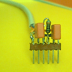
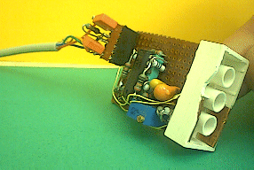
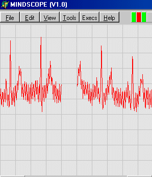
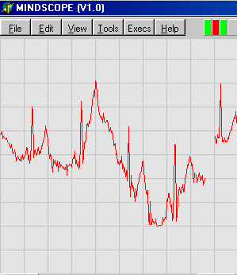

Robbert
Mattijs
Stef Mientki
august 2001
Schematics
Electrodes
Other Needs
Some Recordings
Background Info
| Lego-Knex
Robbert Mattijs |
Mindstorms ECG Sensor
Stef Mientki august 2001 |
the ECG
Schematics Electrodes Other Needs Some Recordings Background Info |
Warning 1
Always operate the RCX with batteries,
never use a mains adapter because there's a serious risk of electrocution.
Warning 2
Don't draw diagnostic conclusions, because
the quality of the sensors is in general not accurate enough.
Warning 3
Don't scrub the skin before applying electrodes
(although all electrode suppliers will advise you to do), it gives unnessairy
risk of skin damage and all sensor-electronics are designed in such a way
that there's no need for it.
Electro
CardioGram 
The ECG measures the electric activity
of the heart. Below on the left is an animated picture of the propagation
of the electrical activity of the heart. Below on the right side is the
electrical activity of the heart, measured between the left-arm and right-arm.
Note that the propagation of the electrical
activity is very slow compared to the propagation in normal electrical
wires.
You can easily detect heartrate from the
ECG, which will increase during physical (and even mental) stress.
A trained doctor can recognize all kind
off heart defects on the base of very small deviations in the registered
signals. The proposed ECG-sensor isn't sensititive enough to display
these small deviations. For instance in the right picture below the third
heartbeat is not normal, but with an RCX (where you've no garantee that
all samples will be catched) you could see a similar heartbeat, although
the underlying heartbeat could be perfectly normal.
By placing the electrodes on different
places around the heart, you get different waveforms, and you can focus
on the electrical activity of the different parts of the heart.
 |
Cirquit 
The sensor amplifier consist of th 6-wire
general purpose bio-amplifer (high CMRR, high input impedance).
Gain is set to 2000 by resistor R1.
For the cable it's best to use twin shielded audiocable, as shown in
the diagram below.
The DRL (Driven Right Leg) terminal should be connected to some common
point on the body (a hand or a leg will do) to reduce the common mode interference
(mains frequency).

Here some pictures of the actual hardware (the trimpot is not used).

The bio-amplifier build on an experimental board mounted on a very simple femal Lego connector, so it fits directly to the RCX. |

The 6-wire connector, the red blocks are the 100 nF condensators. In the middle the gain resistor can be seen. |

Another view of the bio-amplifier, the ECG-sensor connector and the female Lego connector. |
Electrodes 
The electrodes must be made of a material with a stable polarisation
voltage. This does not yield for the DRL-electrode which can be made of
any metal (because no current flows through it).
The most stable electrode material (which is not poisonous) is chlorized-silver
(Ag-AgCl).
Other materials that will do are Silver (Ag) or chrome ?
Below there are number of recordings with different electrode materials,
it may help to choose the right electrodes.
The most important electrode parameter is the stability of the polarisation
voltage. If you want to experiment with different electrode materials,
here are some general guidelines:
An overview of the different standard
electrode placements is given by Richard E. Klabunde, Ph.D.
Other needs 
You need of course some kind of data-acquisition program on your PC.
I used the MindScope program V1.1.
This program downloads a little task into the RCX, and then starts that
task. The task sends continuously samples of the selected sensor to the
PC. Therefor it's necessairy that you can keep
your IR tower alive, which is described here.
If you make long measurements, it's wise to make another small modification
to your IR-tower, "IR-tower
without batteries"
|  | Bad
CMRR, due to not using DRL The same as above, but the reference electrode is not connected.
|
|  | Bad
electrodes (stainless steel) Here you can see the low frequency drift, caused by electrodes which are not stable (yet). |
Background
Information 
A relative simple but complete explanation
of the ECG is given by Richard E. Klabunde, Ph.D. from the Ohio University
College of Osteopathic Medicine.
An overview of the different standard
electrode placements is also given by Richard E. Klabunde, Ph.D.
The history
of the ECG measurements can be found in the ECG library.